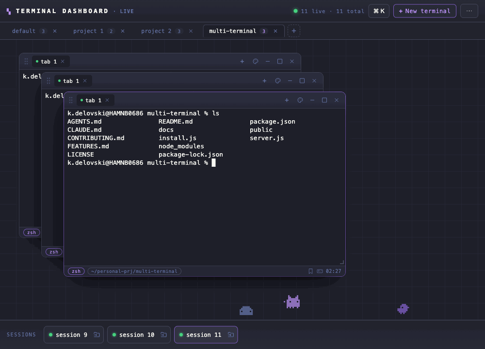

Every shell, one screen.
A browser cockpit of floating, draggable terminal windows — each backed by a real shell (PTY) on your machine. Tile them, group them into projects, theme them, and reconnect without losing a session.
Runs entirely on localhost. Your shells never leave your machine.
The demo is the real UI with no backend — click around, but shells won't run. Install to get live shells.

Why not just tmux or iTerm?
You get tmux's session persistence plus a point-and-click GUI you don't have to learn — floating windows, projects, and themes in the browser you already have open, on macOS, Windows, and Linux alike.
Floating windows
Drag, resize, tile into a grid, tabs per pane. Group windows into project tabs and switch context instantly.
Session reattach
Refresh the browser or drop your connection — the shell keeps running. A 60s grace timer holds the PTY and replays the buffer.
Durable with tmux
With tmux installed, shells survive a server restart or crash — not just a browser refresh.
Real filesystem tree
A live sidebar rooted at the active project. Open a shell in any folder; reveal files in Finder/Explorer.
Command palette
⌘K for fuzzy actions, sessions, and reusable snippets. Broadcast input to every shell in a project.
Themes & polish
Dracula, Nord, Gruvbox, Tokyo Night, Catppuccin and more. GPU rendering, font zoom, clickable links, pixel pets.
Quick start
Requires Node.js 18+. No build step, no Electron.
# first-time setup — picks the right node-pty prebuilt for your OS node install.js # run the server → http://localhost:3000 npm start